1. Alfalfa (Medicago sativa)
Open full table → 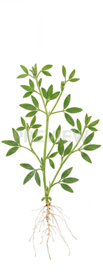
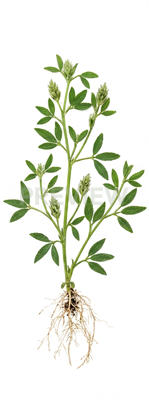
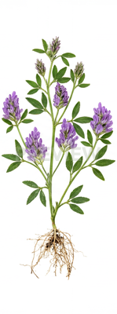
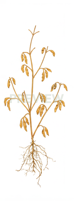
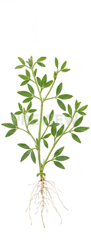
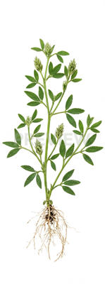
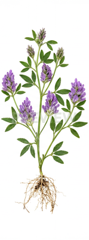
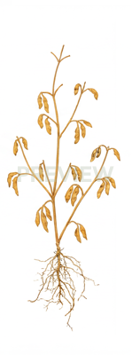
2. Artichoke (Cynara cardunculus)
Open full table →
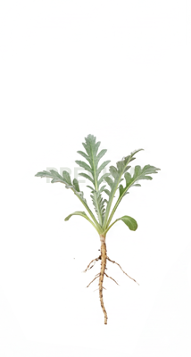
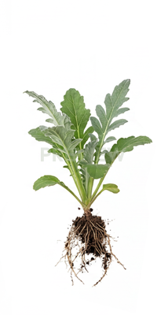
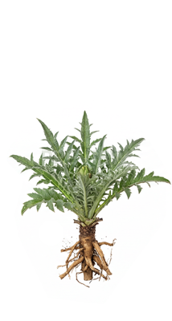
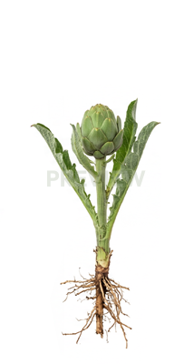
3. Arugula (Eruca vesicaria)
Open full table →
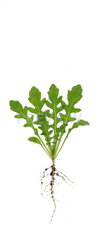
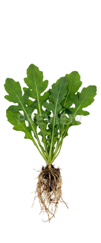
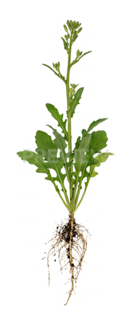
4. Asparagus (Asparagus officinalis)
Open full table →
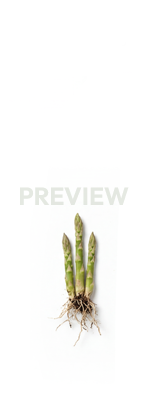
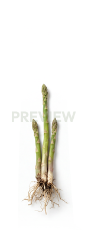
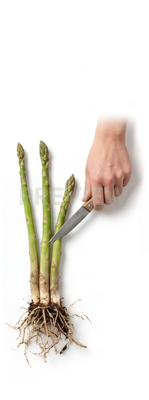
 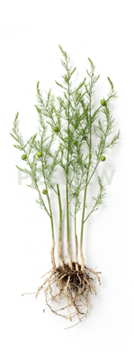
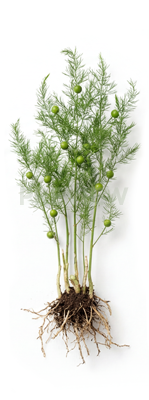
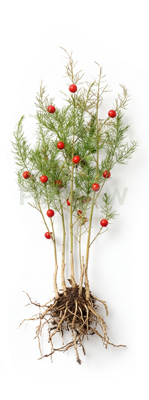
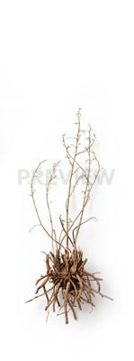
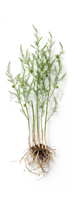
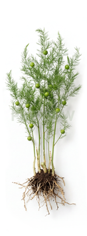
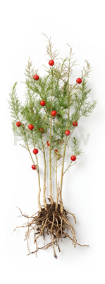
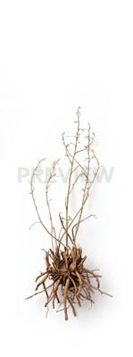
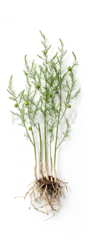
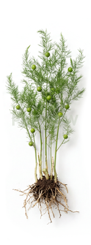
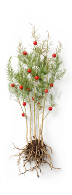
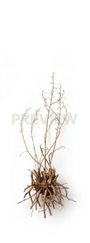
5. Banana (Musa acuminata)
Open full table →
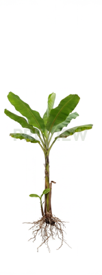
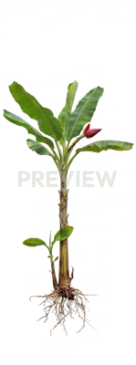
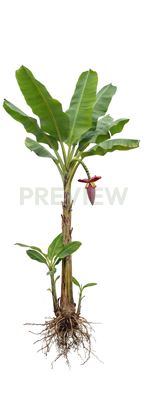
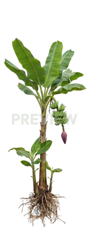
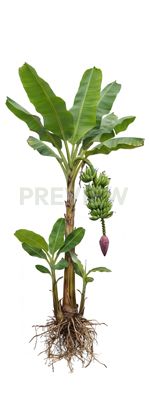
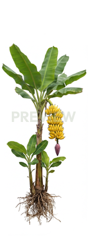
6. Barley (Hordeum vulgare)
Open full table →
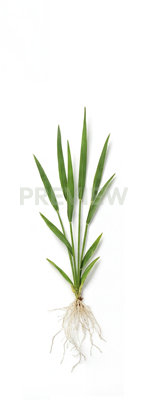
 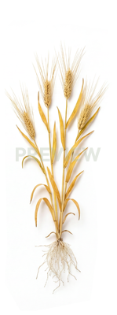
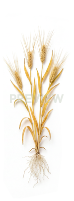
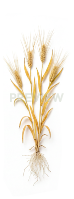
7. Bean (Phaseolus vulgaris)
Open full table →
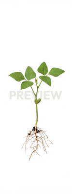
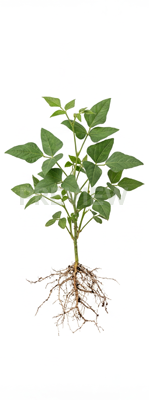
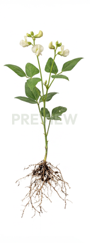
 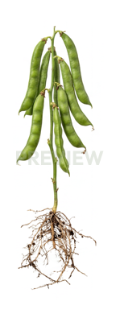
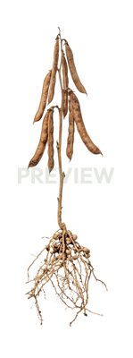
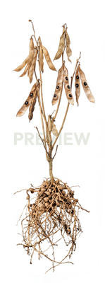
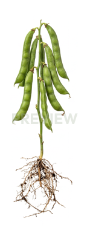
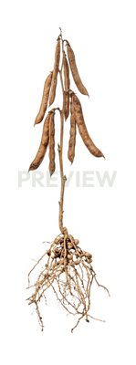
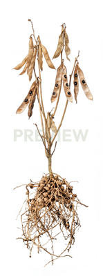
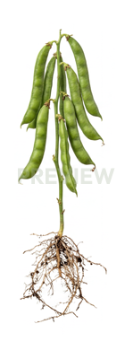
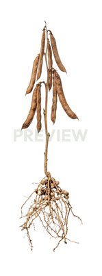
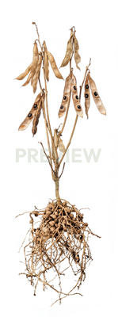
8. Bean (v2) (Phaseolus vulgaris)
Open full table →
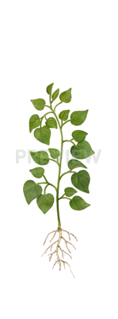
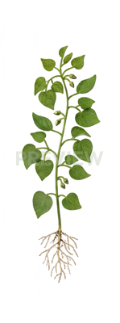
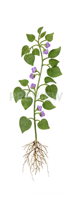
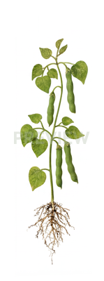
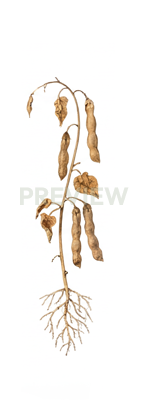
9. Bok Choy (Brassica rapa subsp. chinensis)
Open full table →


10. Broccoli (Brassica oleracea var. italica)
Open full table →
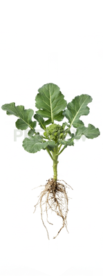
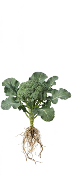
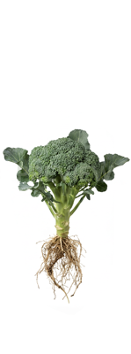
11. Brussels Sprouts (Brassica oleracea var. gemmifera)
Open full table → 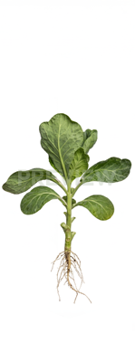
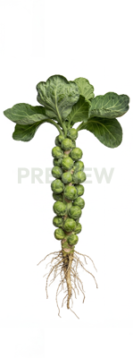
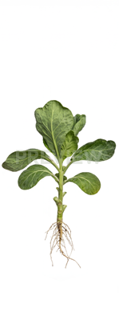
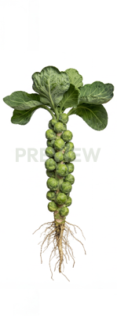

12. Buckwheat (Fagopyrum esculentum)
Open full table →
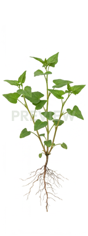
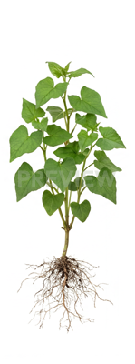
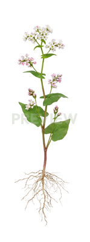
 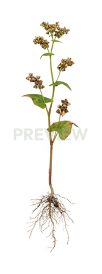
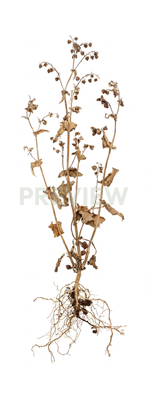
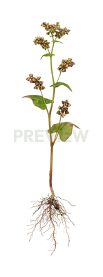
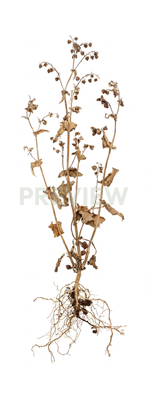
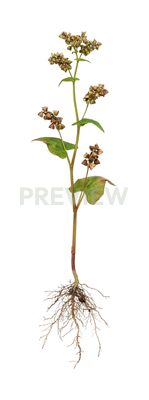
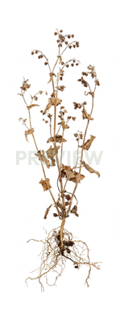
13. Carrot (Daucus carota)
Open full table → 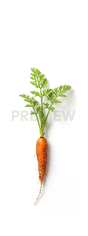
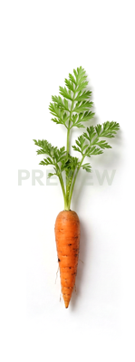
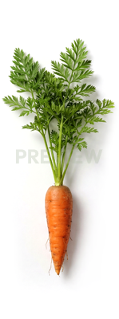
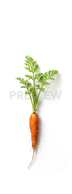
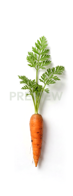
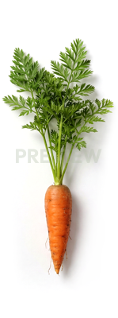
14. Cauliflower (Brassica oleracea var. botrytis)
Open full table →15. Cayenne Pepper (Capsicum annuum)
Open full table →16. Celery (Apium graveolens)
Open full table →
17. Chickpea (Cicer arietinum)
Open full table →18. Chicory (Cichorium intybus)
Open full table →19. Chicory (v2) (Cichorium intybus)
Open full table →20. Clover (Trifolium pratense)
Open full table →21. Clover (v2) (Trifolium pratense)
Open full table →
22. Common Vetch (Vicia sativa)
Open full table →


23. Corn (Zea mays)
Open full table →24. Cotton (Gossypium hirsutum)
Open full table →25. Cotton (v2) (Gossypium hirsutum)
Open full table →

26. Couch Grass (Elymus repens)
Open full table →27. Cowpea (Vigna unguiculata)
Open full table →
28. Cucumber (Cucumis sativus)
Open full table →29. Daikon (Raphanus sativus var. longipinnatus)
Open full table →

30. Dill (Anethum graveolens)
Open full table →31. Eggplant (Solanum melongena)
Open full table →32. Fennel (Foeniculum vulgare)
Open full table →33. Flax (Linum usitatissimum)
Open full table →34. Flax (v2) (Linum usitatissimum)
Open full table →
35. Garlic (Allium sativum)
Open full table →
36. Grape (Vitis vinifera)
Open full table →37. Grape (v2) (Vitis vinifera)
Open full table →
38. Grape (v3) (Vitis vinifera)
Open full table →39. Grape (v4) (Vitis vinifera)
Open full table →
40. Hemp (Cannabis sativa)
Open full table →
41. Hemp (v2) (Cannabis sativa)
Open full table →
42. Hops (Humulus lupulus)
Open full table →43. Kale (Brassica oleracea var. sabellica)
Open full table →
44. Kohlrabi (Brassica oleracea var. gongylodes)
Open full table →45. Leek (Allium ampeloprasum)
Open full table →46. Lentil (Lens culinaris)
Open full table →47. Lettuce (Lactuca sativa)
Open full table →

48. Melon (Cucumis melo)
Open full table →49. Oat (Avena sativa)
Open full table →50. Oilseed Radish (Raphanus sativus var. oleiformis)
Open full table →51. Okra (Abelmoschus esculentus)
Open full table →52. Onion (Allium cepa)
Open full table →53. Parsnip (Pastinaca sativa)
Open full table →54. Pea (Pisum sativum)
Open full table →55. Pea (v2) (Pisum sativum)
Open full table →
56. Peanut (Arachis hypogaea)
Open full table →
57. Peanut (v2) (Arachis hypogaea)
Open full table →

58. Pepper (Capsicum annuum)
Open full table →59. Pepper (v2) (Capsicum annuum)
Open full table →60. Perennial Ryegrass (Lolium perenne)
Open full table →61. Perennial Ryegrass (v2) (Lolium perenne)
Open full table →62. Pineapple (Ananas comosus)
Open full table →63. Potato (Solanum tuberosum)
Open full table →64. Potato (v2) (Solanum tuberosum)
Open full table →
65. Pumpkin (Cucurbita maxima)
Open full table →
66. Quinoa (Chenopodium quinoa)
Open full table →67. Radish (Raphanus sativus)
Open full table →
68. Rapeseed (Brassica napus)
Open full table →69. Red Beet (Beta vulgaris)
Open full table →
70. Red Cabbage (Brassica oleracea var. capitata f. rubra)
Open full table →71. Rice (Oryza sativa)
Open full table →72. Rice (v2) (Oryza sativa)
Open full table →
73. Rutabaga (Brassica napus var. napobrassica)
Open full table →

74. Sesame (Sesamum indicum)
Open full table →
75. Sorghum (Sorghum bicolor)
Open full table →76. Soybean (Glycine max)
Open full table →
77. Soybean (v2) (Glycine max)
Open full table →
78. Soybean (v3) (Glycine max)
Open full table →

79. Spinach (Spinacia oleracea)
Open full table →80. Strawberry (Fragaria × ananassa)
Open full table →
81. Sugar Beet (Beta vulgaris subsp. vulgaris)
Open full table →82. Sugar Beet (v2) (Beta vulgaris subsp. vulgaris)
Open full table →83. Sugarcane (Saccharum officinarum)
Open full table →
84. Sugarcane (v2) (Saccharum officinarum)
Open full table →85. Sunflower (Helianthus annuus)
Open full table →
86. Sweet Potato (Ipomoea batatas)
Open full table →87. Tomato (Solanum lycopersicum)
Open full table →88. Tomato (v2) (Solanum lycopersicum)
Open full table →89. Turnip (Brassica rapa)
Open full table →
90. Watermelon (Citrullus lanatus)
Open full table →
91. Wheat (Triticum aestivum)
Open full table →
92. White Cabbage (Brassica oleracea var. capitata)
Open full table →93. White Mustard (Sinapis alba)
Open full table →94. Zucchini (Cucurbita pepo)
Open full table →